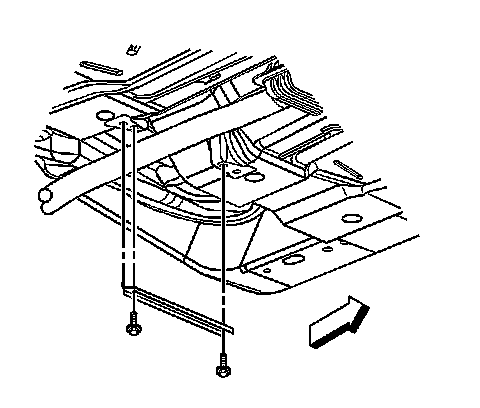
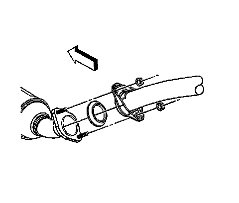
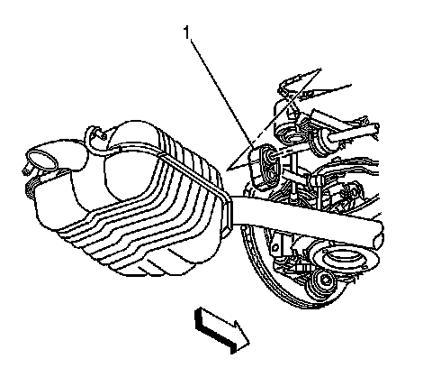
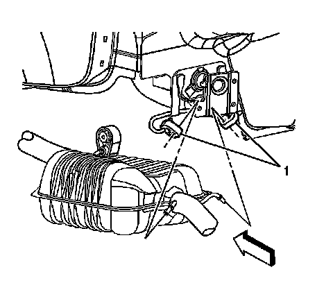
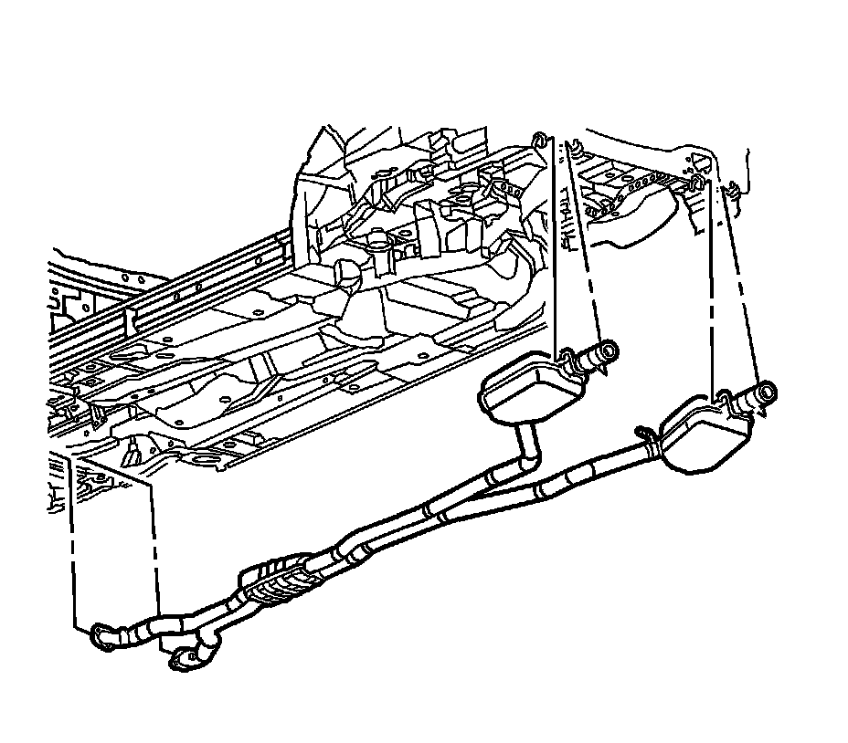
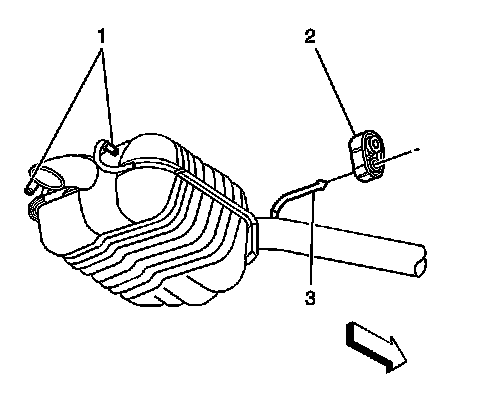

Exhaust System: Service and Repair
Exhaust System Replacement
Servicing of the muffler, resonator or pipe requires the replacement of the exhaust system as a complete one-piece unit.
Removal Procedure
Caution: Refer to Exhaust Service Caution (Service Precautions) .
Caution: Refer to Protective Goggles and Glove Caution (Protective Goggles and Glove Warning) .

1. Raise and support the vehicle. Refer to Lifting and Jacking the Vehicle (Service and Repair) .
2. Remove the heated oxygen sensors from the exhaust pipes. Refer to Heated Oxygen Sensor Replacement - Bank 1 Sensor 2 (Service and Repair) and Heated Oxygen Sensor Replacement - Bank 2 Sensor 2 (Service and Repair) .
3. Remove the 2 bolts securing the floor panel tunnel brace to the floor panel.
4. Remove the floor panel tunnel brace from the floor panel.

5. Suitably support the exhaust system.
6. Remove the nuts securing the exhaust pipes to the exhaust manifolds.

7. Pry the front exhaust hangers (1) free from the rear suspension hanger rods.

8. Apply a suitable lubricant to the tail pipe hanger rods in order to ease the removal of the tail pipe hangers (1).
9. Pry the tail pipe hangers (1) free from the tail pipe hanger rods.

10. With the aid of an assistant, lower the exhaust system.
11. Remove the exhaust manifold seals. Do not reuse the seals.

12. While the exhaust system is on the floor complete the following:
1. Apply a suitable lubricant to the exhaust pipe hanger rods (3) in order to ease the removal of the front exhaust hangers (2).
2. Pull the front exhaust hangers (2) from the exhaust pipe hanger rods.
Installation Procedure
1. While the exhaust system is on the floor complete the following:
1. Apply a soapy solution to the following in order to ease the installation of the hangers:
* The inner diameter of the front exhaust hangers (2)
* The exhaust pipe hanger rods (3)
* The inner diameter of the tail pipe hangers
* The tail pipe hanger rods (1)
2. Press the front exhaust hangers (2) over the exhaust pipe hanger rods (3).
2. Place NEW seals on the exhaust manifold flanges.
Notice: Refer to Exhaust System Inspection Notice (Service Precautions) .
3. With the aid of an assistant, raise the exhaust system into position, aligning the exhaust pipe flanges with the studs located in the rear of the exhaust manifolds.
4. Finger tighten the nuts to the exhaust manifold studs.
5. Press the tail pipe hangers (1) over the tail pipe hanger rods.
6. Press the front exhaust hangers (1) over the rear suspension hanger rods.
Notice: Refer to Fastener Notice (Fastener Notice) .
7. Tighten the exhaust pipes to exhaust manifold nuts.
Tighten the exhaust manifold nuts to 30 N.m (22 lb ft).
8. Position the floor panel tunnel brace to the floor panel.
9. Install the 2 bolts securing the floor panel tunnel brace to the floor panel.
Tighten the floor panel tunnel brace bolts to 25 N.m (18 lb ft).
10. Install the heated oxygen sensors to the exhaust pipes. Refer to Heated Oxygen Sensor Replacement - Bank 1 Sensor 2 (Service and Repair) and Heated Oxygen Sensor Replacement - Bank 2 Sensor 2 (Service and Repair) .
11. Lower the vehicle.